6. Flow diagrams#
6.1 Checkout decision flow (order-service)#

6.2 Saga recovery job (every 15 s, one runner via ShedLock)#

- Moving forward or back: once money has been authorised, the saga moves forward, because the customer intended to buy and stock is held. Before that point it moves back.
- Safe to repeat: every step is idempotent on the remote side, so running recovery twice is harmless.
6.3 Reservation expiry job (inventory-service, every 30 s)#

6.4 Gateway request pipeline (Chain of Responsibility)#

6.5 Token bucket rate limiting#

Default limits:
| Route | Rate |
|---|---|
| Read | 50 req/s burst 100 per user |
| Checkout | 2 req/s burst 5 per user |
| Hot SKU checkout | Per-SKU bucket set by staff during sales |
6.6 Kafka consumer retry and dead letters#

DLQ records are replayed with tools/dlq-replay after the cause is fixed. Alerts fire when DLQ depth is above 0.
6.7 Cache-aside read and invalidation#

Deleting the key after the commit, not before it, avoids a race: if the key were deleted first, a concurrent read could put the old value back.
6.8 Flash-sale admission#

6.9 Recommendation update#
